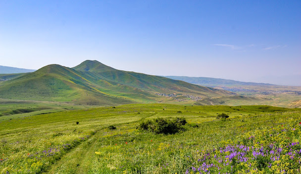
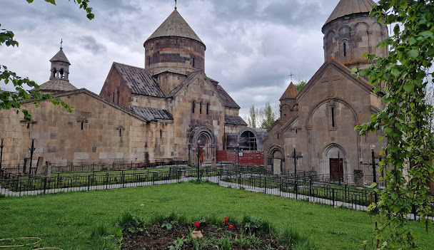

Կոտայք
Կոտայքի մարզ, մարզի կարգավիճակ ունեցող վարչական միավոր Հայաստանի կենտրոնական հատվածում։ Մարզի տարածքն ընդգրկում է Կոտայքի սարավանդը, Մարմարիկ գետի ավազանը, Հրազդան գետի ավազանի վերին ու միջին հատվածը, ինչպես նաև Գեղամա լեռնաշղթայի արևմտյան լանջերը։ Այն հարավ-արևմուտքից սահմանակից է մայրաքաղաք Երևանին, արևմուտքից՝ Արագածոտնի, հյուսիսից՝ Լոռու, հյուսիս-արևելքից՝ Տավուշի, արևելքից՝ Գեղարքունիքի և հարավից՝ Արարատի մարզերին։ Հայաստանի միակ մարզն է, որը չի սահմանակցում հարևան որևէ պետության հետ։ Միևնույն ժամանակ, Կոտայքը չորս մարզերից մեկն է, որոնք անմիջապես հարում են Երևանին։
Անվանում
Ըստ ընդունված վարկածի՝ Կոտայք անվանումը կապված է Մեծ Հայքի Արշակունի թագավոր Խոսրով Կոտակի անվան հետ։ Մեկ այլ վարկածի համաձայն «Կոտայք» անվանումը կապված է հինաշխարհյան նույնանուն ցեղանվան՝ Վանի թագավորության սեպագիր արձանագրություններում հիշատակվող Էթիունի երկրի անվան հետ։ Ղևոնդ Ալիշանը հնարավոր է համարում, որ հույն նշանավոր աշխարհագրագետ Կլավդիոս Պտղոմեոսի հիշատակած Կոտակենե գավառը նույն Կոտայքն է։ Որոշ աղբյուրներ փաստում են, որ Կոտայքի անվանումը կապված է միջնադարյան Հայաստանում ապրող մի իշխանի անվան հետ, որոշներն էլ այն պայմանավորում Գեղարքունիք գավառի Կոթ կամ Կոթաքար գյուղաքաղաքի անվանով, իբրև Կոթա փոխադրվածների կամ Կոթայեցիքի գավառ։ Կոտայքի մասին տեղեկություններ են պահպանվել Անանիա Շիրակացու «Աշխարհացոյց»-ում և մատենագիրների երկերում։ Հայ պատմիչներից առաջին հիշատակությունը Սեբեոսինն է (7-րդ դար)։ Արաբ պատմագիր Բալաձորին Կոտայքը հիշում է Կույտա ձևով։ Միքայել Չամչյանը, այլ սկզբնաղբյուրներից օգտվելով, Կոտայքն անվանում է Խատա կամ Խատայոց։
Պատմություն
Կոտայքի արևմտյան մասը հնում մտնում էր Այրարատ նահանգի Կոտայք, իսկ արևելյանը՝ Մազազ գավառների կազմի մեջ։ Կոտայք գավառի մասին տեղեկություններ պահպանվել են 7-րդ դարի «Աշխարհացույց»-ում և հայ մատենագիրներ Սեբեոսի, Թովմա Արծրունու, Ասողիկի, Կիրակոս Գանձակեցու, Ստեփանոս Օրբելյանի և Զաքարիա Քանաքեռցու աշխատություններում, հայկական հին ձեռագրերում և հիշատակարաններում։
 